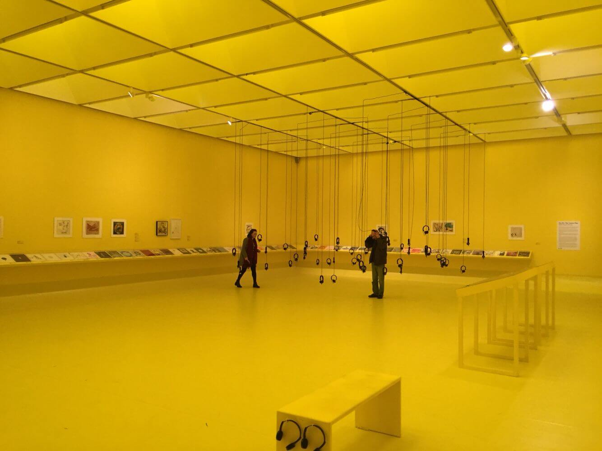

Nottingham Contemporary
The first exhibition in the UK devoted to the work of Sun Ra, the legendary jazz musician and Afro-Futurist. It aims to present him as a “total artist”. Besides his compositions, recordings and concerts, Sun Ra was a writer, philosopher and poet. He also designed his Arkestra’s record covers and publicity, and conceived and starred in a feature film, Space Is the Place (1974). Sun Ra took the name of the Egyptian sun god and claimed to have come from Saturn. The exhibition is designed by leading French scenographer Nadia Lauro.
Sun Ra (1914-1993)
This exhibition was part of Alien Encounters – four solo exhibitions, each featuring new commissions. The four artists use performance, theatre and film. For them, fiction and alternative realities become ways of transforming and extending our understanding of identity, social norms and world history.
The Cosmo Man.
The idea for the season developed out of conversations with Collabor-8 Collective, Nottingham Contemporary’s young people’s group, and was curated to coincide with Circuit, our arts festival for 15 to 25 years olds in Nov.